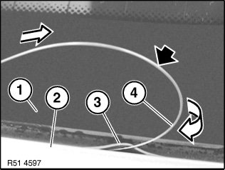

51 31 ... Remove Windscreen With "Roll Out 2000"
51 31 ... Remove Windscreen With "Roll Out 2000"
Windscreen removal system "Roll Out 2000"


NOTE: Both paint and ergonomic and health-endangering damage is minimised with the "Roll Out 2000" system.
Sourcing reference:
See Aftersales Assistance Portal (ASAP) - Service/Technical - Workshop Equipment (Start BMW) - Shop Workshop Equipment or at www.bmwgroup.com

WARNING: Follow safety instructions for working on vehicles with airbag systems (risk of injury).
IMPORTANT: Take care when handling sharp-edged tools and cutting wire (risk of damage to head airbag and window glass).

IMPORTANT:
- Always keep both suction cups dry and clean to ensure their optimum adhesion on the windscreen.
- Suction cup may not be applied at the damaged point (crack in window glass).
- Lubricate spool if lock rattling becomes too loud.
- Always wear safety goggles and protective gloves for your own safety.
Mounting suction cup lifters on windscreen or rear window:
NOTE:
- Optimum cutting is guaranteed when the cutting wire is at an acute angle to the adhesive bead. There is a risk of the cutting wire breaking if the angle is too obtuse.
- The suction cup lifter (2) is used as the deflection point to achieve the corresponding angle.
- Depending on the window glass version and the effort applied during cutting, it may be necessary to change the deflection point during cutting.
- The suction cups without a coil can even be used as the deflection point.
Preparatory work:
- Cut off required cutting wire length:
Length approximately = 6 x window glass diagonal
- The cutting wire loops must lie on top of each other in area (B).
They must not get caught up in each other. (Otherwise no possibility of cutting the adhesive bead/wire will break.)
Overlapping of cutting wire loops approx. 10 cm.
Distance from right window edge approx. 30 cm.
Pulling cutting wire into vehicle:
- Grip wire with pliers
- Wire end (1) must be bent towards window glass.
- Heat wire end (1) and use it to pierce adhesive bead (2).
- Pull the wire approximately 1.5 m into the passenger compartment
Laying cutting wire around window glass:
- Starting from pull-in point, lay wire eyelet created on the outside around the window glass
- Pull excess wire into passenger compartment
IMPORTANT:
- Make sure the cutting wire is located at all four corner points below the window glass.
- Check that the cutting wire is not caught on clamps or body.
- Secure window glass on outside with adhesive tape against sliding.

NOTE:
Window glass (1) with installed seals (3) or moulded-on surrounds:
- Moisten cutting wire (4) and seals (3) on window glass (1) with water
- Insert cutting wire (4) in bend (without kinking) between window glass(1) and body aperture (2)
Protect the passenger compartment:
- To avoid damage and possible dirt contamination, protect A-pillars, roof and dashboard trim panel (3) by means of plastic washer (1)
- Always carry plastic washer (1) between respective wire (2) being tightened and trim panels
Attaching wire in hoisting winch with double coil:
- Bend over cutting wire end (1) approximately 10 mm and insert into slot of spool (2)
- Repeat process with other end of wire (1) and second spool (2)
- Wind cutting wire (1) onto spools by hand until cutting wire (1) is under slight tension
Starting the dismantling:
NOTE: Spools can only be rotated in one direction.
- Make sure the wire is always situated in the guide channel of the suction cup lifter (1)
- Fit reversible ratchet onto top spool shaft (2) and tighten wire
- Start by cutting lower adhesive bead
- At the end of the cutting process, the two wire loops join up at the lifting winch (1)
- Remove "Roll Out 2000"
- Remove window glass